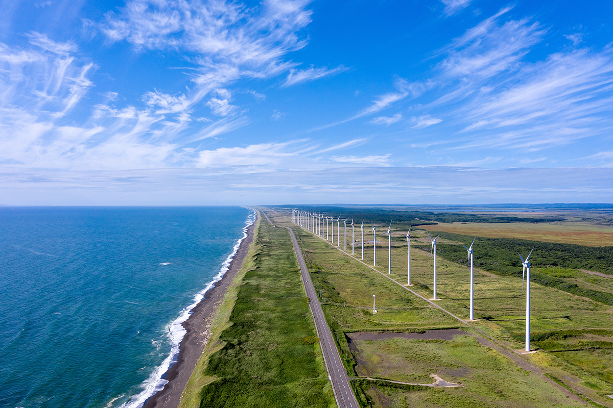
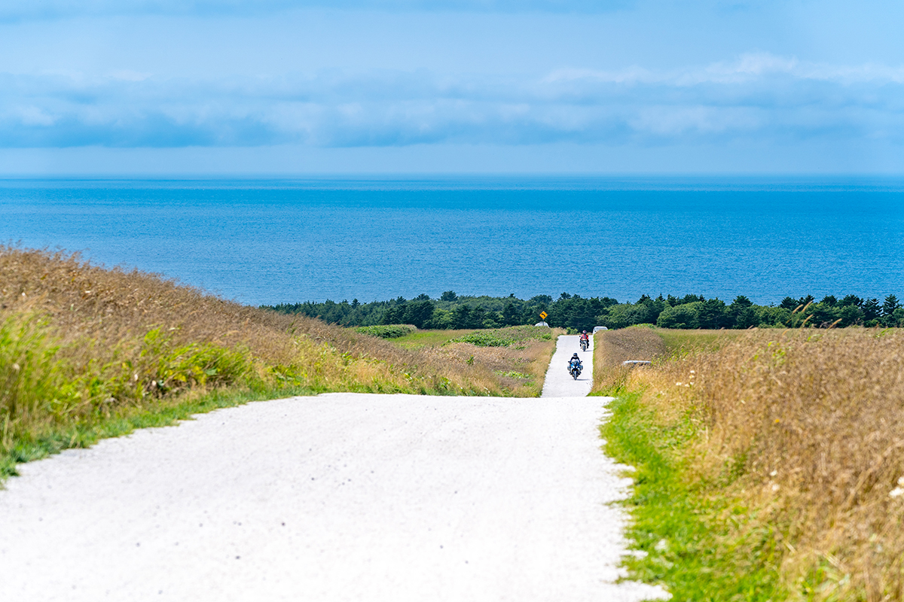
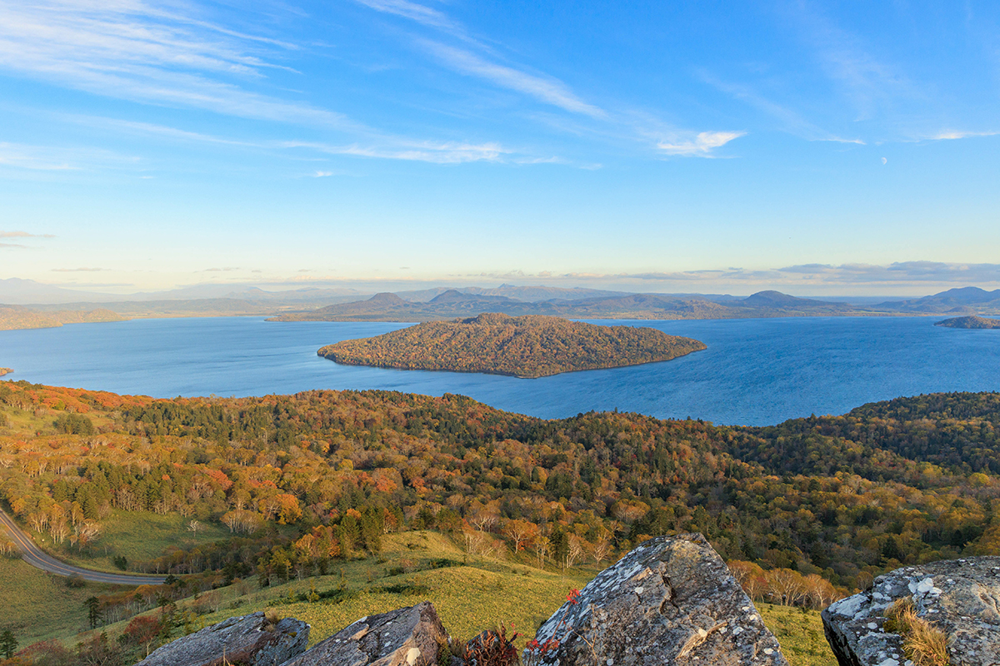
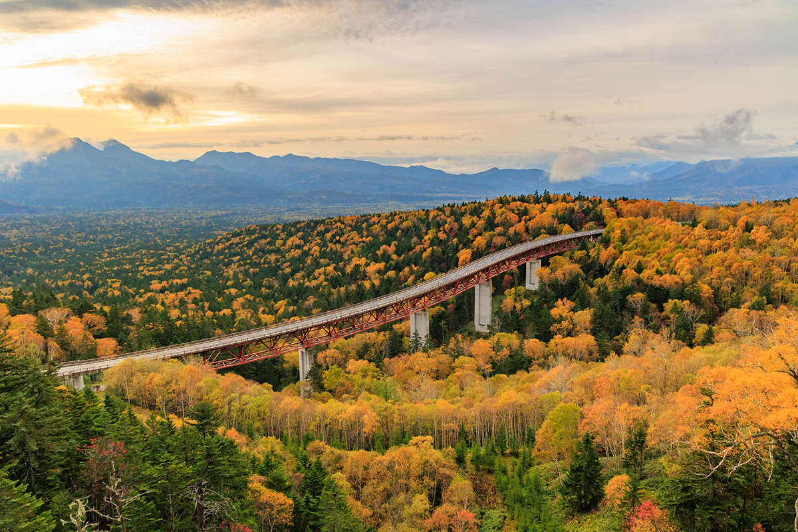
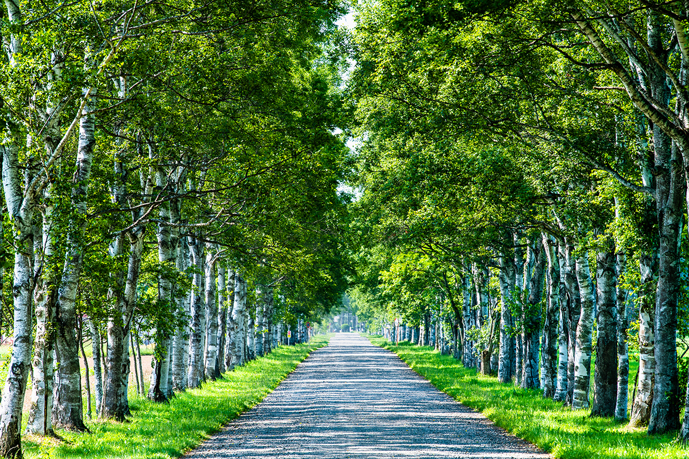
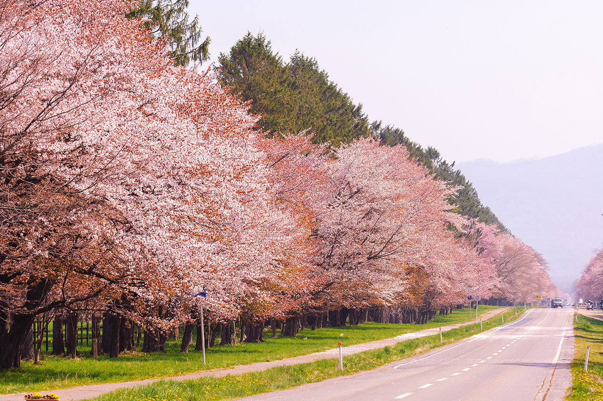

Префектура Хоккайдо · шесть дорог · путешествие на машине
Шесть дорог Хоккайдо: перевалы над облаками, белая дорога из ракушек и сакуровый тоннель

Хоккайдо лучше всего смотреть из окна машины: здесь дороги тянутся вдоль моря на сотни километров, поднимаются к перевалам над облаками и ныряют в берёзовые и сакуровые аллеи. Мы выбрали шесть маршрутов, ради которых стоит сесть за руль хотя бы раз в жизни.
Маршруты
Шесть дорог острова
Япония протянулась от субарктики до субтропиков, и смена времён года здесь особенно заметна. Дороги ведут к самым красивым её местам: затерянные уголки у моря и в горах, пейзажи, которые веками складывались из природы и труда людей, аллеи, где деревья смыкаются над головой, и мосты, построенные инженерами.
Хоккайдо в этом списке особенный. Шесть дорог острова ведут на самый север страны, к перевалам с видом на озёра и горные хребты, на равнины Токати и в сакуровый тоннель. Каждая хороша в своё время года, и у каждой поблизости есть что попробовать.
Север
«Белая дорога»: ракушки на краю страны

На холмах Соя, у самой северной оконечности Хоккайдо, есть дорога без официального имени. Её называют просто «Белой». Около трёх километров пути покрыты дроблёными раковинами гребешков, и в солнечный день дорога буквально светится.
С обеих сторон зелень пастбищ, впереди лазурное Японское море. По холмам расставлены ветряки, на горизонте как мираж встаёт остров Рисири, а с мыса Соя в хорошую погоду видны очертания российского острова. На пастбищах вдоль пути неторопливо щиплют траву коровы.
После поездки рекомендуем попробовать сочные местные гребешки и «тако-сябу», осьминога, которого окунают в горячий бульон. А можно продолжить путь на пароме до острова Рэбун. Лучшее время для поездки: лето. Зимой дорогу закрывают из-за снега: по данным 2026 года, примерно с ноября до конца апреля или мая.
«Белая дорога» на холмах Соя
- Адрес
- префектура Хоккайдо, Вакканай, холмы Соя
- Телефон
- +81 162-24-1216 (туристическая ассоциация Вакканая)
- Даты
- круглый год, круглосуточно
- Цены / Вход
- бесплатно
- Как добраться
- около 1 часа от развязки Тоётоми-Кита объездной дороги Тоётоми (если ехать со стороны мыса Соя, как советует туристическая ассоциация)
Побережье
Линия Оророн: 380 километров вдоль Японского моря
Линия Оророн тянется по побережью Японского моря от Отару до Вакканая, примерно на 380 километров, и проходит через национальный парк. Где именно она начинается и заканчивается, считают по-разному. Летом это дорога простора: блестящее море, чистое небо и солёный ветер в открытое окно.
По пути открываются три картины, ради которых сюда едут. Первая это ряд огромных ветряков электростанции Отонруи вдоль дороги. Вторая это гора Рисири-Фудзи, которая будто плывёт над морем. Третья это закат, когда море становится золотисто-оранжевым. Чтобы проехать все известные места линии, нужно около шести часов.
Из местной еды стоит искать сладкие креветки амаэби и кадзуноко, икру сельди. По дороге можно заехать на мыс Огон и в старый рыбацкий дом семьи Ханада.
Линия Оророн
- Адрес
- префектура Хоккайдо, побережье Японского моря от Отару до Вакканая
- Телефон
- +81 162-24-1216 (туристическая ассоциация Вакканая)
- Даты
- круглый год, круглосуточно
- Цены / Вход
- бесплатно
- Как добраться
- около 30 минут от развязки Тоётоми-Кита объездной дороги Тоётоми (в сторону Вакканая)
Восток
Перевал Бихоро: озеро Куссяро под облаками

Перевал Бихоро лежит на дороге 243, которая связывает городки Тэсикага и Бихоро на востоке Хоккайдо. Серпантин здесь живой и разнообразный, ехать по нему одно удовольствие. Со смотровой площадки на высоте 525 метров озеро Куссяро видно целиком, а посреди него, как зелёная шапка, лежит остров Накадзима.
В ясный день отсюда видны вулкан Иодзан, горы Сяридакэ и Токатидакэ. Ранним утром озеро иногда скрывается под морем облаков, и тогда пейзаж становится почти неземным. Рядом много известных мест: озеро Масю, онсэн Кавою, вулкан Иодзан и озеро Акан.
Лучшее время для поездки: осень. Из местной еды рекомендуем говядину «Бихоро вагю» с тающим нежным жиром и «агэимо», жареный во фритюре картофель.
Перевал Бихоро
- Адрес
- префектура Хоккайдо, Тэсикага и Бихоро, дорога 243
- Телефон
- +81 15-482-2200 (туристическая ассоциация озера Масю)
- Даты
- круглый год, круглосуточно
- Цены / Вход
- бесплатно
- Как добраться
- около 55 минут от развязки Китами-Хигаси скоростной дороги Токати-Охотск
- Сайт
- masyuko.or.jp
Горы
Перевал Микуни: самая высокая точка государственных дорог Хоккайдо

Перевал Микуни лежит на дороге 273 в городке Камисихоро. Здесь, на высоте 1139 метров, проходит самая высокая точка среди государственных дорог Хоккайдо. Вокруг горы и бескрайний лес, а с моста Мацуми длиной 330 метров, который называют «дорогой в небе», открываются вершины гор Тайсэцудзан.
Больше всего людей приезжает сюда на осенние листья, с конца сентября до начала октября. Но перевал меняется и в течение дня: утром его окутывает туман, вечером со смотровой площадки виден закат. Неподалёку стоят руины моста через реку Таусюбэцу и пастбище Найтай, самое большое общественное пастбище Японии, с террасой «Найтай Тэрасу». Из местной еды здесь мягкое мороженое и говядина «Токати хабу-гю». В 2026 году терраса работала с конца апреля до конца октября.
Перевал Микуни
- Адрес
- префектура Хоккайдо, Камисихоро, дорога 273
- Телефон
- +81 1564-7-7272 (туристическая ассоциация Камисихоро)
- Даты
- круглый год, круглосуточно
- Цены / Вход
- бесплатно
- Как добраться
- около 50 минут от развязки Камикава-Соункё скоростной дороги Асахикава-Момбэцу
- Сайт
- kamishihoro.info
Равнина
Берёзовая аллея ранчо Токати

От дороги 236 начинается одна из самых известных картин района Токати: прямая аллея белых берёз длиной около 1,3 километра на территории ранчо Токати. За деревьями простираются пастбища, такие широкие, какие бывают только на Хоккайдо.
Сквозь листву в машину пробивается солнце, в окно тянет прохладой, и ехать хочется медленно. В конце аллеи есть смотровая площадка: оттуда видна вся равнина Токати и далёкие горы Хидака. Смотреть на аллею можно свободно, но на пастбища и в постройки ранчо входить нельзя.
Лучшее время для поездки: лето. После дороги можно отдохнуть в онсэне Токатигава и попробовать насыщенный сыр Токати и бутадон, рис со свининой в сладком соусе. Рядом станция Кофуку и смотровая площадка Симидзу-Маруяма.
Берёзовая аллея ранчо Токати
- Адрес
- префектура Хоккайдо, Отофукэ, ранчо Токати
- Телефон
- +81 155-32-6633 (туристическая ассоциация онсэна Токатигава)
- Даты
- круглый год, круглосуточно (на пастбища и в постройки ранчо вход запрещён)
- Цены / Вход
- бесплатно
- Как добраться
- около 10 минут от развязки Отофукэ-Обихиро скоростной дороги Дото
- Сайт
- tokachigawa.net
Весна
Сакуровая аллея Нидзюккэн в Сидзунае

От дороги 235 в округе Хидака отходит аллея Нидзюккэн: около 2000 деревьев сакуры, посаженных вдоль дороги на семь километров. Полное цветение обычно приходится на начало и середину мая. Тогда горная сакура эдзо-ямадзакура и другие деревья образуют розовый тоннель, и машина едет сквозь метель лепестков.
Вдоль дороги 235 разбросаны конные заводы, где разводят чистокровных скаковых лошадей, и часто можно увидеть, как они пасутся на лугах. Рядом «Дорога чистокровок» в Уракаве и мыс Эримо. Из местной еды весной стоит попробовать морских ежей, говядину «Биратори вагю», комбу Хидака и сисямо.
Сакуровая аллея Нидзюккэн в Сидзунае
- Адрес
- префектура Хоккайдо, Синхидака, Сидзунай
- Телефон
- +81 146-42-1000 (туристическая ассоциация Синхидаки)
- Даты
- круглый год, круглосуточно; сакура цветёт обычно в начале и середине мая
- Цены / Вход
- бесплатно
- Как добраться
- около 30 минут от развязки Сидзунай дороги Ацуга-Сидзунай скоростной дороги Хидака